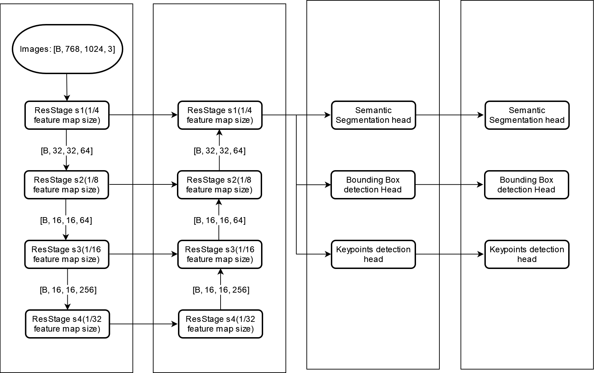

95_WR MS4 TrafficSign Classification
Module task
Enter a series of SIGN/Arrow Bbox detected from MAPDL, and classify through the Trafficsign Classification.
Model input
Camera Images
Traffic Sign/ RoadMarker BBoxes from Mapdl（image-view multi task module）
Dataset
Data Pre -processing: None
Image ImageSize: 64*64
Model Design && DAG
DAG

Different from MS3
From 45 to 66 (the classification of the ARROW series is added)